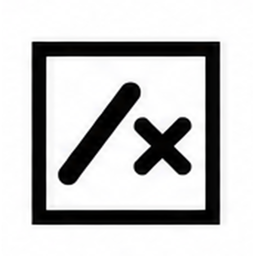

Multiplication tables 2–9, answered with a single stroke. Know it or don't — six seconds to spit it out.
Run your Sonos music system by talking to Reachy Mini — a voice app for Pollen Robotics' desktop robot.